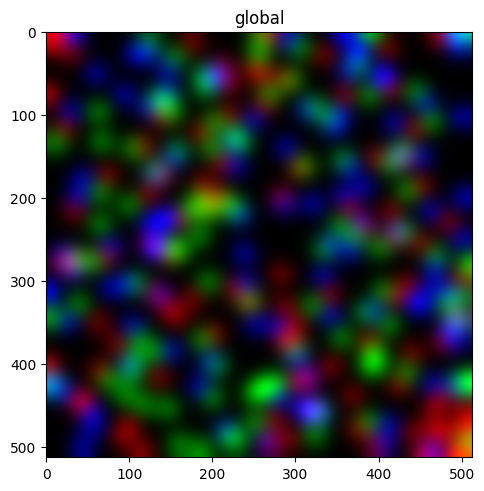
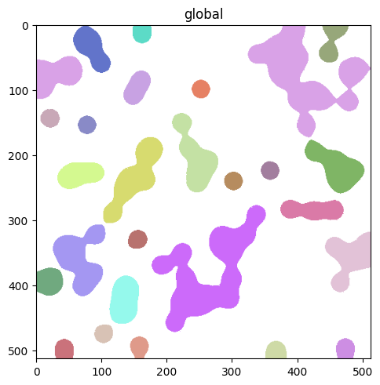
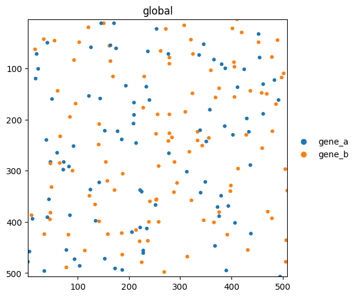
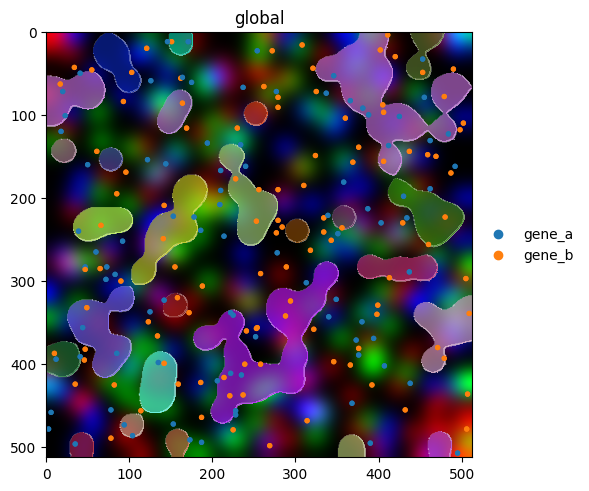
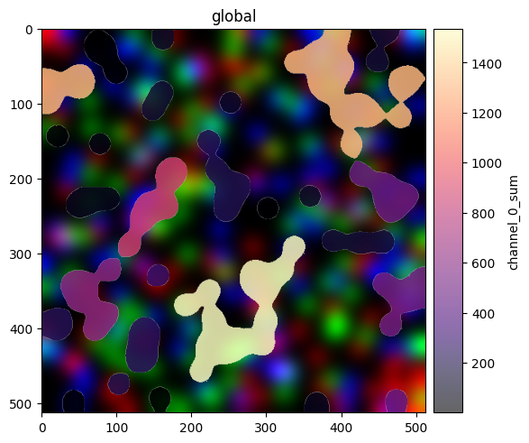
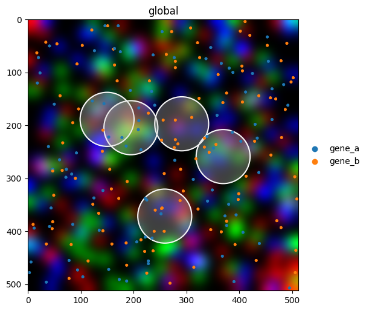

Getting started with spatialdata-plot#
This tutorial walks through the core mental model of spatialdata-plot: a fluent API on top of a SpatialData object that lets you layer the four spatial element types (images, labels, shapes, points) into a single matplotlib figure.
We use the lightweight built-in blobs dataset so this notebook runs in seconds with zero downloads. Once the API clicks, the same calls work on Visium, Xenium, MERFISH, or any other dataset that can be loaded as a SpatialData object. See the other tutorials in this gallery for real-world examples.
The data#
sd.datasets.blobs() returns a SpatialData object containing one image, one label mask, one points layer, and several shape layers, all aligned in the global coordinate system.
import spatialdata as sd
import spatialdata_plot # noqa: F401 (registers the .pl accessor)
sdata = sd.datasets.blobs()
sdata
SpatialData object
├── Images
│ ├── 'blobs_image': DataArray[cyx] (3, 512, 512)
│ └── 'blobs_multiscale_image': DataTree[cyx] (3, 512, 512), (3, 256, 256), (3, 128, 128)
├── Labels
│ ├── 'blobs_labels': DataArray[yx] (512, 512)
│ └── 'blobs_multiscale_labels': DataTree[yx] (512, 512), (256, 256), (128, 128)
├── Points
│ └── 'blobs_points': DataFrame with shape: (<Delayed>, 4) (2D points)
├── Shapes
│ ├── 'blobs_circles': GeoDataFrame shape: (5, 2) (2D shapes)
│ ├── 'blobs_multipolygons': GeoDataFrame shape: (2, 1) (2D shapes)
│ └── 'blobs_polygons': GeoDataFrame shape: (5, 1) (2D shapes)
└── Tables
└── 'table': AnnData (26, 3)
with coordinate systems:
▸ 'global', with elements:
blobs_image (Images), blobs_multiscale_image (Images), blobs_labels (Labels), blobs_multiscale_labels (Labels), blobs_points (Points), blobs_circles (Shapes), blobs_multipolygons (Shapes), blobs_polygons (Shapes)
The fluent .pl API#
Every plot follows the same shape:
sdata.pl.render_<element>(...).pl.render_<element>(...).pl.show()
Each render_* call stages an element to draw and returns the SpatialData object, so calls chain. pl.show() draws everything onto a matplotlib figure.
Render an image#
sdata.pl.render_images("blobs_image").pl.show()

Render labels#
By default labels are filled. Use contour_px to draw boundaries instead, useful for overlaying segmentations on top of an image without hiding pixel-level detail.
sdata.pl.render_labels("blobs_labels", contour_px=3).pl.show()

Render points#
Points carry per-row metadata (here a genes column). Pass color= to color points by any column in the points dataframe or any var/obs column in the linked table.
sdata.pl.render_points("blobs_points", color="genes", size=10).pl.show()

Layering elements#
The real value of the fluent API shows up when combining elements. Render order matters: later calls draw on top of earlier ones.
(
sdata.pl.render_images("blobs_image")
.pl.render_labels("blobs_labels", contour_px=2, outline_alpha=0.8)
.pl.render_points("blobs_points", color="genes", size=8)
.pl.show()
)

Coloring by a feature#
Both render_labels and render_shapes accept color= to map a column from the linked AnnData table onto element fill. Here we color label regions by a per-region intensity (channel_0_sum).
(
sdata.pl.render_images("blobs_image")
.pl.render_labels("blobs_labels", color="channel_0_sum", cmap="magma", fill_alpha=0.6)
.pl.show()
)

Styling a publication figure#
Combine multiple parameters for a polished overlay. Most styling parameters mirror matplotlib’s vocabulary (cmap, alpha, linewidth, named colors, hex codes), so anything you know from matplotlib works here too.
(
sdata.pl.render_images("blobs_image")
.pl.render_shapes(
"blobs_circles",
fill_alpha=0.3,
outline_width=1.5,
outline_color="white",
outline_alpha=1.0,
)
.pl.render_points("blobs_points", color="genes", size=6)
.pl.show(figsize=(6, 6))
)

For reproducibility#
# ruff: noqa: F401, F811, I001, E402
# fmt: off
import warnings
import dask
import spatialdata_plot
%load_ext watermark
# fmt: on
%watermark -v -m -p timeit,warnings,dask,datashader,matplotlib,numpy,pandas,scanpy,spatialdata,spatialdata_plot,geopandas,shapely
Python implementation: CPython
Python version : 3.13.7
IPython version : 9.13.0
timeit : unknown
warnings : unknown
dask : 2026.1.1
datashader : 0.19.0
matplotlib : 3.10.9
numpy : 2.4.4
pandas : 2.3.3
scanpy : 1.12.1
spatialdata : 0.7.3
spatialdata_plot: 0.3.3
geopandas : 1.1.3
shapely : 2.1.2
Compiler : Clang 15.0.0 (clang-1500.1.0.2.5)
OS : Darwin
Release : 25.2.0
Machine : arm64
Processor : arm
CPU cores : 8
Architecture: 64bit